Last updated: 2017-07-30
Code version: dc2a4e6
We apply dash to some chosen PFMs from HOCOMOCO database. These PFMs cover the cases from small number of sites to large number of sites. We compare two ways to estimate the base probabilities. The first one is simply the sample proportion and another one is the dash. A detailed introduction of dash can be found here. We also compare the logo plots and negative logo plots of the estimated probabilities by the two methods.
The first example is when the number of sequences is small. In this PFM, the number of sequence is only 5.
PFM[[10]] [,1] [,2] [,3] [,4] [,5] [,6] [,7] [,8] [,9] [,10] [,11] [,12] [,13]
[1,] 1 0 0 0 0 0 2 0 0 0 1 0 0
[2,] 2 0 3 5 3 0 1 0 0 4 1 4 1
[3,] 1 5 1 0 0 5 2 5 5 1 2 1 4
[4,] 1 0 1 0 2 0 0 0 0 0 1 0 0
[,14]
[1,] 1
[2,] 1
[3,] 0
[4,] 3colSums(PFM[[10]]) [1] 5 5 5 5 5 5 5 5 5 5 5 5 5 5The estimated probabilities before applying dash are:
pwmb1=t(dash(t(PFM[[10]]),optmethod = 'mixEM')$datamean)
rownames(pwmb1)=c('A','C','G','T')
colnames(pwmb1)=(1:14)
pwmb1 1 2 3 4 5 6 7 8 9 10 11 12 13 14
A 0.2 0 0.0 0 0.0 0 0.4 0 0 0.0 0.2 0.0 0.0 0.2
C 0.4 0 0.6 1 0.6 0 0.2 0 0 0.8 0.2 0.8 0.2 0.2
G 0.2 1 0.2 0 0.0 1 0.4 1 1 0.2 0.4 0.2 0.8 0.0
T 0.2 0 0.2 0 0.4 0 0.0 0 0 0.0 0.2 0.0 0.0 0.6The estimated probabilities after applying dash are:
pwma1=round(t(dash(t(PFM[[10]]),optmethod = 'mixEM')$posmean),3)
rownames(pwma1)=c('A','C','G','T')
colnames(pwma1)=(1:14)
pwma1 1 2 3 4 5 6 7 8 9 10 11 12
A 0.25 0.022 0.238 0.022 0.163 0.022 0.254 0.022 0.022 0.104 0.25 0.104
C 0.25 0.022 0.267 0.935 0.372 0.022 0.249 0.022 0.022 0.571 0.25 0.571
G 0.25 0.935 0.248 0.022 0.163 0.935 0.254 0.935 0.935 0.221 0.25 0.221
T 0.25 0.022 0.248 0.022 0.302 0.022 0.244 0.022 0.022 0.104 0.25 0.104
13 14
A 0.104 0.248
C 0.221 0.248
G 0.571 0.238
T 0.104 0.267The logo plots
logomaker(pwmb1,color_profile = color_profile,frame_width = 1,pop_name = 'Logo plot, before applying dash')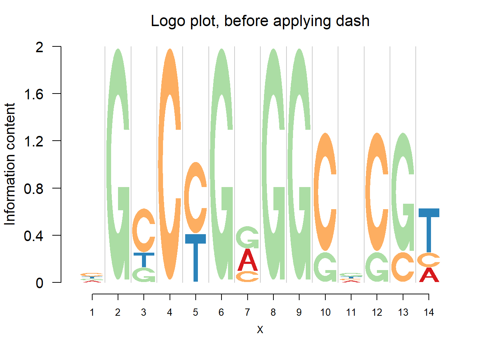
logomaker(pwma1,color_profile = color_profile,frame_width = 1,pop_name = 'Logo plot, after applying dash')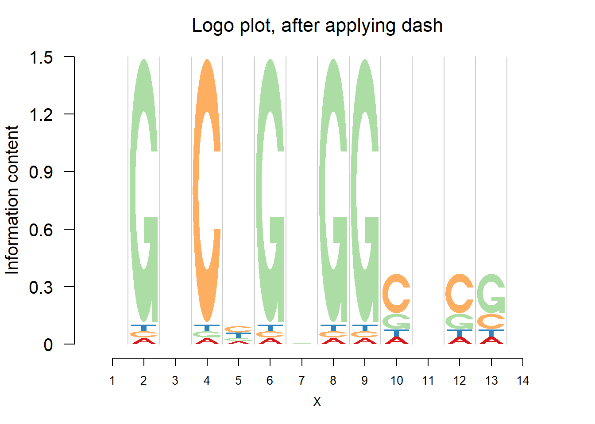
The negative logo plots, with log-odds heights.
nlogomaker(pwmb1,logoheight = 'log_odds',color_profile = color_profile,frame_width = 1,pop_name = 'Neg logo plot, before applying dash')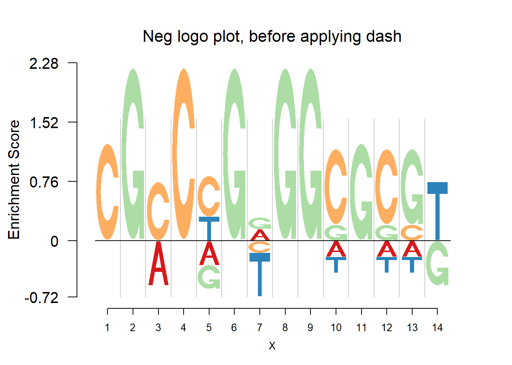
nlogomaker(pwma1,logoheight = 'log_odds',color_profile = color_profile,frame_width = 1,pop_name = 'Neg logo plot, after applying dash')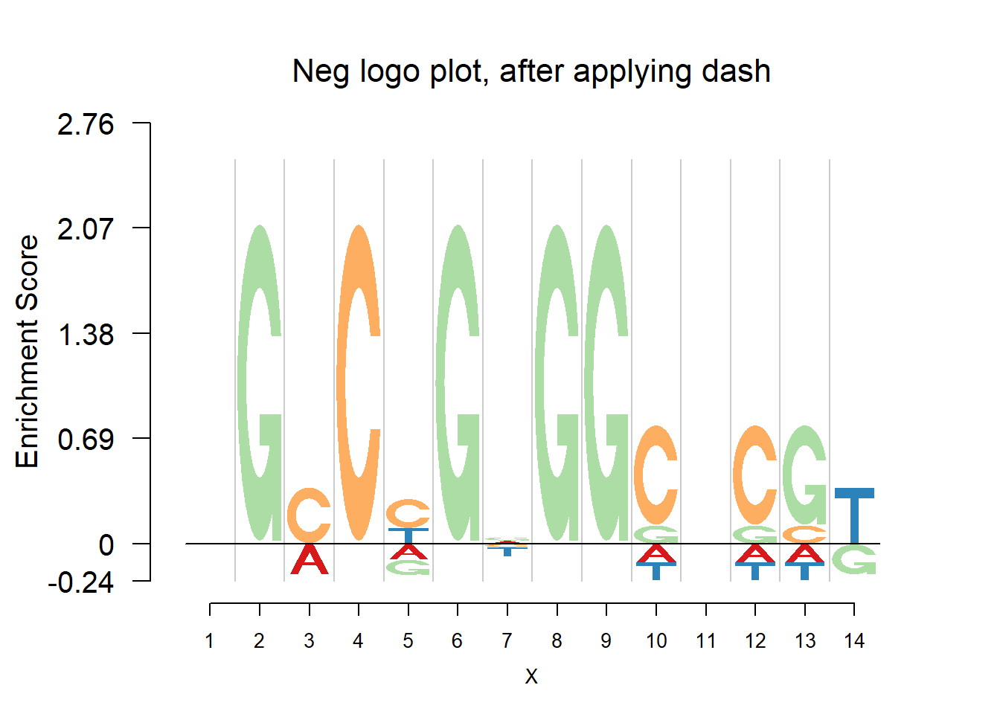
Comparing the matrices and plots, it is obvious that dash shrinks the estimates toward the background probability, which is 0.25 for the four bases, especially when all or at least three bases appear at that position, for example (1,2,1,1) or (1,1,0,3). Meanwhile, dash preserves the cases when there’s only one base appearing, for example (0,0,5,0).
The second example is when the number of sequences is moderate. In this example, the number of sequences is 41.
PFM[[2]] [,1] [,2] [,3] [,4] [,5] [,6] [,7] [,8] [,9] [,10] [,11] [,12] [,13]
[1,] 16 8 6 2 0 13 16 15 14 21 16 9 0
[2,] 11 8 6 0 0 2 4 6 3 4 2 6 1
[3,] 5 6 8 36 33 1 1 6 6 6 3 3 36
[4,] 9 19 21 3 8 25 20 14 18 10 20 23 4
[,14] [,15] [,16] [,17] [,18]
[1,] 0 9 3 18 17
[2,] 0 4 8 1 11
[3,] 40 10 8 7 4
[4,] 1 18 22 15 9colSums(PFM[[2]]) [1] 41 41 41 41 41 41 41 41 41 41 41 41 41 41 41 41 41 41The estimated probabilities before applying dash are:
pwmb2=t(dash(t(PFM[[2]]),optmethod = 'mixEM')$datamean)
rownames(pwmb2)=c('A','C','G','T')
colnames(pwmb2)=(1:18)
round(pwmb2,3) 1 2 3 4 5 6 7 8 9 10 11 12
A 0.390 0.195 0.146 0.049 0.000 0.317 0.390 0.366 0.341 0.512 0.390 0.220
C 0.268 0.195 0.146 0.000 0.000 0.049 0.098 0.146 0.073 0.098 0.049 0.146
G 0.122 0.146 0.195 0.878 0.805 0.024 0.024 0.146 0.146 0.146 0.073 0.073
T 0.220 0.463 0.512 0.073 0.195 0.610 0.488 0.341 0.439 0.244 0.488 0.561
13 14 15 16 17 18
A 0.000 0.000 0.220 0.073 0.439 0.415
C 0.024 0.000 0.098 0.195 0.024 0.268
G 0.878 0.976 0.244 0.195 0.171 0.098
T 0.098 0.024 0.439 0.537 0.366 0.220The estimated probabilities after applying dash are:
pwma2=round(t(dash(t(PFM[[2]]),optmethod = 'mixEM')$posmean),3)
rownames(pwma2)=c('A','C','G','T')
colnames(pwma2)=(1:18)
pwma2 1 2 3 4 5 6 7 8 9 10 11 12
A 0.306 0.215 0.166 0.057 0.006 0.310 0.373 0.307 0.326 0.469 0.371 0.224
C 0.257 0.215 0.166 0.011 0.006 0.069 0.117 0.199 0.103 0.123 0.076 0.162
G 0.199 0.183 0.206 0.852 0.791 0.048 0.053 0.199 0.164 0.164 0.097 0.099
T 0.238 0.388 0.462 0.081 0.196 0.573 0.458 0.295 0.407 0.245 0.456 0.515
13 14 15 16 17 18
A 0.010 0.004 0.229 0.100 0.413 0.351
C 0.033 0.004 0.146 0.204 0.056 0.261
G 0.853 0.963 0.246 0.204 0.182 0.156
T 0.104 0.028 0.380 0.492 0.350 0.231The logo plots
logomaker(pwmb2,color_profile = color_profile,frame_width = 1,pop_name = 'Logo plot, before applying dash')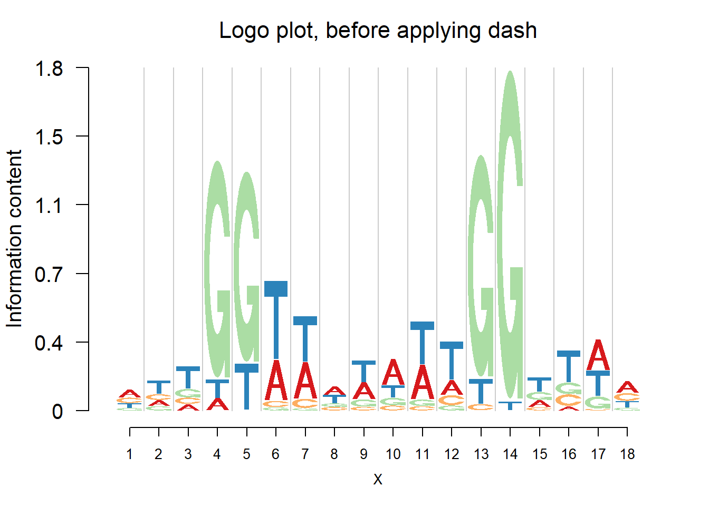
logomaker(pwma2,color_profile = color_profile,frame_width = 1,pop_name = 'Logo plot, after applying dash')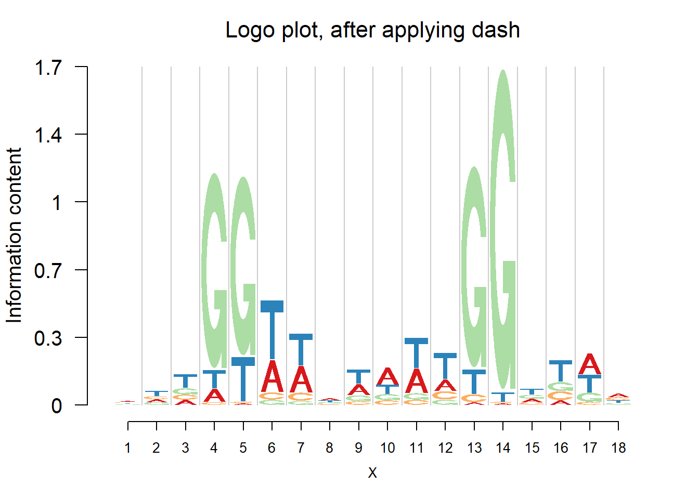
The negative logo plots, with log-odds heights.
nlogomaker(pwmb2,logoheight = 'log_odds',color_profile = color_profile,frame_width = 1,pop_name = 'Neg logo plot, before applying dash')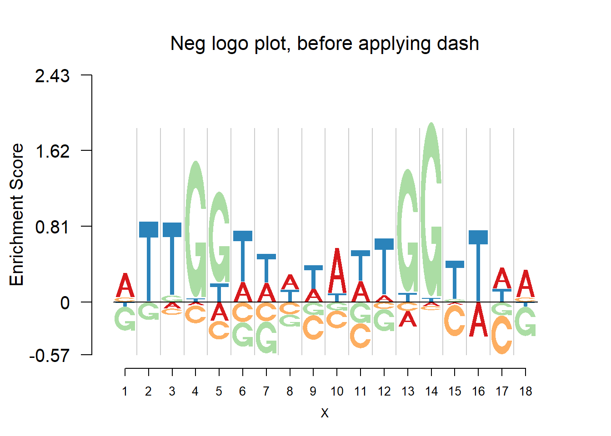
nlogomaker(pwma2,logoheight = 'log_odds',color_profile = color_profile,frame_width = 1,pop_name = 'Neg logo plot, after applying dash')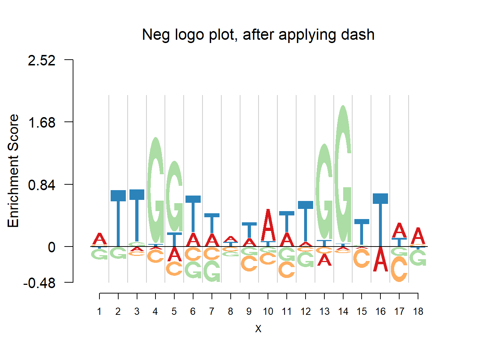
From the matrices and the plots, we can notice that the probabilities are still shrunk toward 0.25 but are not as much as them in the first example. As the number of sequences increases, the force of data goes up and hence the estimated probabilities are closer to the sample proportion.
When the number of sequence continues to increase, we expect that the estimated probabilities are almost the same as sample proportion, since the data have already contained enough information.
PFM[[1]] [,1] [,2] [,3] [,4] [,5] [,6] [,7] [,8] [,9]
[1,] 41 11 22 3 1 3 0 0 43
[2,] 18 12 44 1 150 1 3 0 67
[3,] 56 35 21 146 1 149 1 154 16
[4,] 39 96 67 4 2 1 150 0 28colSums(PFM[[1]])[1] 154 154 154 154 154 154 154 154 154The estimated probabilities before applying dash are:
pwmb3=t(dash(t(PFM[[1]]),optmethod = 'mixEM')$datamean)
rownames(pwmb3)=c('A','C','G','T')
colnames(pwmb3)=(1:9)
round(pwmb3,3) 1 2 3 4 5 6 7 8 9
A 0.266 0.071 0.143 0.019 0.006 0.019 0.000 0 0.279
C 0.117 0.078 0.286 0.006 0.974 0.006 0.019 0 0.435
G 0.364 0.227 0.136 0.948 0.006 0.968 0.006 1 0.104
T 0.253 0.623 0.435 0.026 0.013 0.006 0.974 0 0.182The estimated probabilities after applying dash are:
pwma3=round(t(dash(t(PFM[[1]]),optmethod = 'mixEM')$posmean),3)
rownames(pwma3)=c('A','C','G','T')
colnames(pwma3)=(1:9)
pwma3 1 2 3 4 5 6 7 8 9
A 0.265 0.077 0.150 0.021 0.008 0.021 0.001 0.001 0.277
C 0.128 0.084 0.283 0.009 0.969 0.008 0.020 0.001 0.423
G 0.354 0.228 0.144 0.942 0.008 0.963 0.007 0.998 0.113
T 0.253 0.611 0.423 0.028 0.014 0.008 0.971 0.001 0.186The logo plots
logomaker(pwmb3,color_profile = color_profile,frame_width = 1,pop_name = 'Logo plot, before applying dash')logomaker(pwma3,color_profile = color_profile,frame_width = 1,pop_name = 'Logo plot, after applying dash')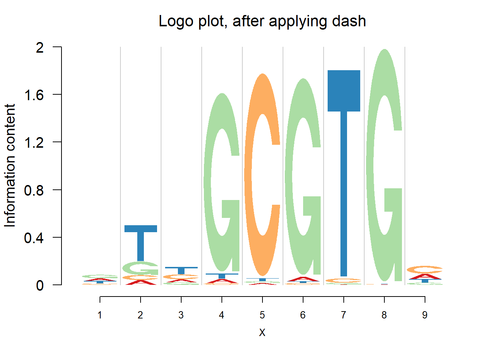
The negative logo plots, with log-odds heights.
nlogomaker(pwmb3,logoheight = 'log_odds',color_profile = color_profile,frame_width = 1,pop_name = 'Neg logo plot, before applying dash')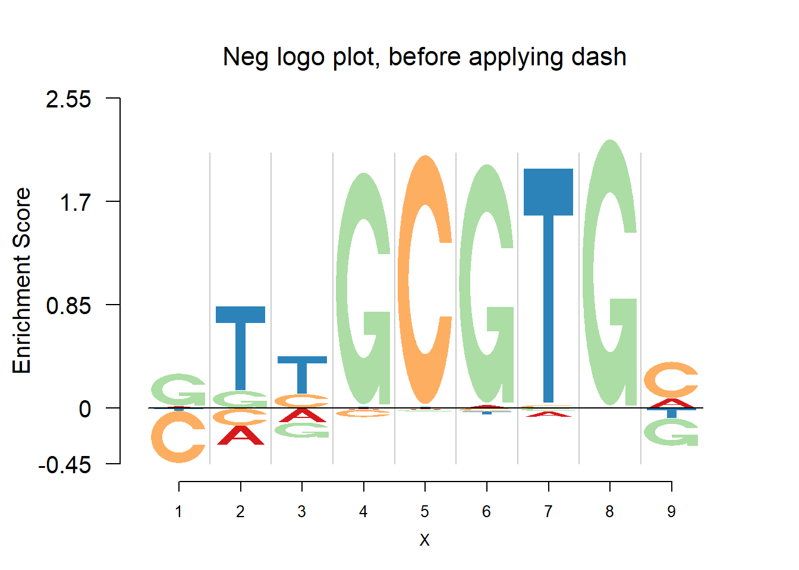
nlogomaker(pwma3,logoheight = 'log_odds',color_profile = color_profile,frame_width = 1,pop_name = 'Neg logo plot, after applying dash')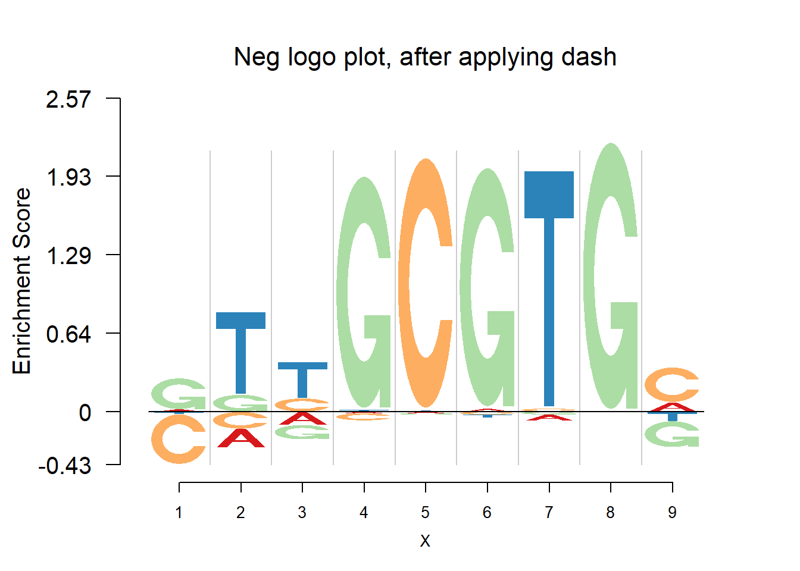
sessionInfo()R version 3.4.0 (2017-04-21)
Platform: x86_64-w64-mingw32/x64 (64-bit)
Running under: Windows 10 x64 (build 15063)
Matrix products: default
locale:
[1] LC_COLLATE=English_United States.1252
[2] LC_CTYPE=English_United States.1252
[3] LC_MONETARY=English_United States.1252
[4] LC_NUMERIC=C
[5] LC_TIME=English_United States.1252
attached base packages:
[1] stats graphics grDevices utils datasets methods base
other attached packages:
[1] dash_0.99.0 SQUAREM_2016.8-2 Logolas_1.1.2
loaded via a namespace (and not attached):
[1] Rcpp_0.12.11 digest_0.6.12 rprojroot_1.2
[4] grid_3.4.0 backports_1.0.5 git2r_0.18.0
[7] magrittr_1.5 evaluate_0.10 stringi_1.1.5
[10] LaplacesDemon_16.0.1 rmarkdown_1.6 RColorBrewer_1.1-2
[13] tools_3.4.0 stringr_1.2.0 parallel_3.4.0
[16] yaml_2.1.14 compiler_3.4.0 htmltools_0.3.5
[19] knitr_1.15.1 This R Markdown site was created with workflowr